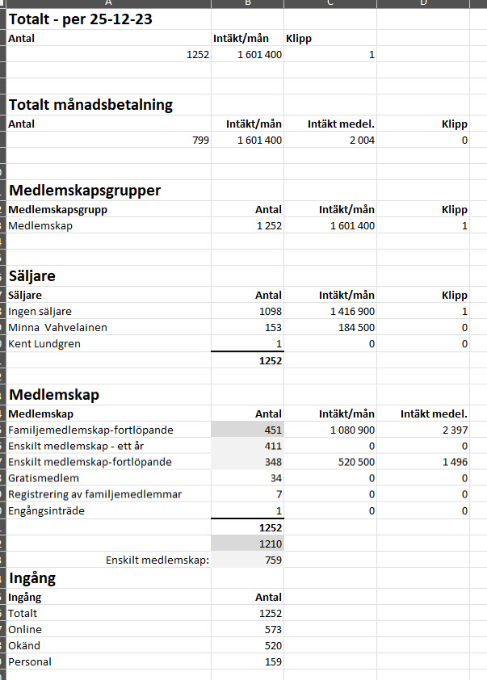

← Tillbaka till Medlemsutveckling
Hej Wondr,
Vi skulle behöva ha hjälp med att få fram hur många "aktiva medlemmar" vi har, tack.
Enligt utsökning av "aktiva (betalande?) medlemmar" som finns i Wondr-rapporten med samma namn:
https://bjerredssaltsjobad.wondr.se/w_report/reports/report/Subscription/Active
Wondr-appen (i telefonen) säger att vi har knappt 1700 "aktiva" medlemmar!?
(Här måste "tillhörande" familjemedlemmar då räknas med, eller?)
❓ Frågan är hur "tillhörande familjemedlemmar" i ett familjemedlemskap ska räknas?
Vi skulle vilja ha hjälp med att både räkna ut hur många "aktiva och betalande medlemmar" vi har, dvs enskilda medlemmar som betalar, och hur många familjemedlemskap vi har (dvs där varje familjemedlemskap räknas med en gång).
→ Är det drygt 1200 st vid årsskiftet?
Vi skulle också vilja veta hur många aktiva medlemmar vi har totalt, dvs när vi räknar ihop alla enskilda medlemskap och alla familjemedlemmar som ingår i en familj.
→ Är det ungefär 1700 st vid årsskiftet?
Wondr-appen redovisar även vad som hänt de 30 senaste dagarna (december 2025):
Vi skulle vilja ha hjälp med att definiera både hur 1700 "aktiva medlemmar" enligt Wondr-appen räknas, och hur "nya medlemmar" och "förlorade medlemmar" räknas ut, tack.
Nu har jag försökt göra en egen sammanställning av förändringar av antalet medlemmar på:
https://kentlundgren.se/program/Bjerred/medlemmar/
Se även:
https://kentlundgren.se/program/Bjerred/medlemmar/aktiva_medlemmar_251223.jpg
(som är den sammanställning man får ut när man söker ut "aktiva medlemmar" i Wondr)

Skärmdump från Wondr: Aktiva medlemmar per 23 december 2025
Mvh
Kent Lundgren
070 606 9876
ekonomi@kallbadhus.se